무선설비기사 (2003-03-16 기출문제)
1과목: 디지털 전자회로
1. 다음 연산증폭기 회로에서 입출력 특성은? (단,연산증폭기 A1,A2와 다이오우드 D1,D2는 이상적이다.)
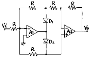
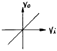
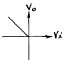
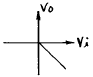
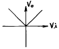
(정답률: 알수없음)

2. 전원의 평활회로에서 쵸크코일입력형에 비해 콘덴서입력형의 장점은?
- 출력직류전압이 크다
- 첨두역전압이 높다
- 대전류에 적합하다
- 전압변동율이 양호하다
(정답률: 알수없음)
3. 1[MHz]을 입력으로 하는 분주 회로에서 출력이 250[KHz]을 가지려면 T Flip-Flop 몇 개가 필요한가?
- 1
- 2
- 3
- 4
(정답률: 알수없음)
4. 다음 중 발진주파수가 가장 안정적인 발진기는?
- 수정발진기
- 윈브리지발진기
- 이상형발진기
- 음향발진기
(정답률: 알수없음)
5.
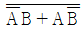
의 논리식을 간략화 하면?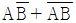
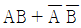
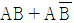
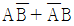
(정답률: 알수없음)
6. 다음 중 데이터 선택회로라고도 불리우며 여러개의 입력 신호선(채널)중에서 하나를 선택하여 출력선(1개)과 연결하여주는 조합논리회로는 어느 것인가?
- Multiplexer
- Demultiplexer
- Encoder
- Decoder
(정답률: 알수없음)
7. 다음 Karnaugh도를 간략화 한 결과는?
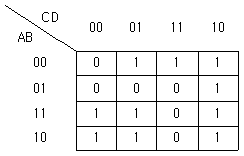
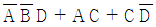
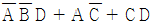
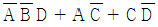
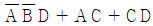
(정답률: 알수없음)
8. 출력전력 100[W]의 반송파를 50[%]변조 하였을 때의 양측파대의 전력은 몇[W]인가?
- 7.5[W]
- 3.5[W]
- 12.5[W]
- 4.5[W]
(정답률: 알수없음)
9. 차동증폭기에서 차동신호에 대한 전압이득은 Ad이고 동상 신호에 대한 전압이득은 Ac이다. 이때 동상신호 제거비(CMRR)를 옳게 나타낸 식은?
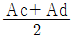
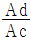
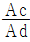
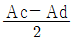
(정답률: 알수없음)
10. 그림과 같은 RC결합 CC증폭기 회로에서 전압이득은 약 얼마인가? (단, 입력저항 Ri = 2⑤[㏀], hie = 1.1[㏀])
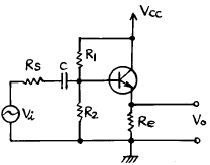
- 51
- 1.3
- 0.995
- 0.699
(정답률: 알수없음)
11. 두 개의 2진수를 더하기 위한 반가산기(HA)회로는 1개의 X-OR와 1 개의 AND 게이트로 구성된다. 그러면 자리올림이 있는 덧셈에 사용하기 위한 전가산기(FA)의 회로구성은 다음 중 어느 것으로 구성하여야 하는가?
- 2개의 X-OR, 3개의 AND
- 2개의 X-OR, 2개의 AND, 1개의 OR
- 2개의 X-OR, 2개의 OR, 1개의 AND
- 1개의 X-OR, 2개의 AND, 2개의 OR
(정답률: 알수없음)
12. Base 변조회로(제곱 변조)의 특징이 아닌 것은?
- Base에 반송파와 신호파를 중첩시키는 방식이다.
- 변조 신호 전력이 적다.
- 변조도를 높이면 일그러짐이 크다.
- 피변조파 출력이 크다.
(정답률: 알수없음)
13. 다음과 같은 회로에 구형파 입력 Vi를 인가 하였을 때 출력파형으로서 타당한 것은? (단, A는 이상적인 연산증폭기임)
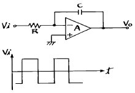
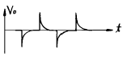
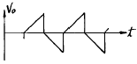
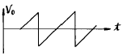
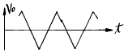
(정답률: 알수없음)
14. 논리회로를 구성하고자 할 때 IC에 내장되어 있는 AND, OR, NAND, NOR, NOT, X-OR, F/F 등의 논리소자 중에서 선택적으로 퓨즈를 절단하는 방법으로 사용자가 직접 기록(write)할 수 있는 PAL 또는 PLA와 같은 IC는 다음 중 어디에 속하는가?
- PLC
- PLD
- PLL
- RAM
(정답률: 알수없음)
15. 다음의 자기 바이어스회로(self-bias)에서 Ic 의 Ico에 대한 안정계수 S의 이론적 최소치는 어느 때인가? (단,1+β ＞＞ RB/RE, RB = R1//R2 이다.)
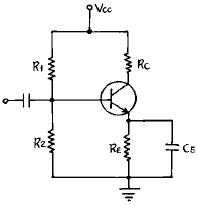
- RB/RE → 100일때
- RB/RE → 0일때
- RB/RE → →일때
- RB/RE → 1+β 일때
(정답률: 알수없음)
16. MOS 논리회로의 특징이 아닌 것은?
- 높은 입력 임피던스이다.
- 소비전력이 작다.
- 잡음여유도가 크다.
- TTL과의 혼용이 매우 용이하다.
(정답률: 알수없음)
17. AM 변조 방식중 가장 효율이 좋은 방식은?
- 에미터 변조
- 베이스 변조
- 평형변조
- 콜렉터 변조
(정답률: 알수없음)
18. B급 SEPP 출력회로에서 10[W]의 출력으로 16[Ω]의 스피커를 동작시키고자 한다. 여기에 같은 전원을 2개 사용코자 할 때, 각 1개의 전원 전압은 얼마로 하여야 하는가? (단, 출력의 여유는 25[%]가 있어야 한다.)
- 10[V]
- 20[V]
- 40[V]
- 60[V]
(정답률: 알수없음)
19. 그림의 회로에서 Vo을 옳게 표현한 것은? (단, K = R2/R1 = Rb/Ra)
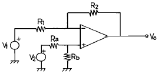
- K(V1 + V2)
- -K(V1 + V2)
- K(V1 - V2)
- -K(V1 - V2)
(정답률: 알수없음)
20. 그림과 같은 스위칭용 슈미트트리거 회로에서 S/W를 OFF시키면 +5[V]로 충전하기 시작할 때의 시정수는? (단, R1=100[Ω], R2=10[㏀], C=3.3[㎌])
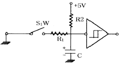
- 0.33 [ms]
- 3.3 [ms]
- 33 [ms]
- 330 [ms]
(정답률: 알수없음)
2과목: 무선통신 기기
21. 병렬공진 회로에서 코일의 인덕턴스 100[μH], 콘덴서의 용량 400[pF], 공진 주파수에서 Q가 50일때 코일의 저항 R은 얼마인가?
- 0.1[Ω]
- 1[Ω]
- 10[Ω]
- 100[Ω]
(정답률: 알수없음)
22. 전파 정류회로에서 정류 효율은 반파 정류 회로의 몇 배까지 얻어질 수 있는가?
- 2배
- 4배
- 6배
- 8배
(정답률: 알수없음)
23. 위성통신 지구국의 기본적인 구성이 아닌 것은?
- 안테나계
- 송수신계
- 자세제어계
- 인터페이스계
(정답률: 알수없음)
24. 다음중 공진현상을 이용한 주파수 측정법이 아닌 것은?
- 동축형 파장계
- 레헤르(Lecher)선 주파수계
- 헤테로다인 주파수계
- 공동형 파장계
(정답률: 알수없음)
25. 우리나라에서 사용되고 있는 디지털 M/W 통신의 동일채널(Co-Channel) 주파수 배치를 가장 잘 설명한 것은?
- 수직, 수평 편파를 동시에 1채널의 주파수로 사용
- 수직 편파만을 사용
- 수평 편파만을 사용
- 송신을 수직편파, 수신을 수평편파를 사용
(정답률: 알수없음)
26. 발진 주파수를 안정시키는 방법이 아닌 것은?
- 항온조 시설을 한다.
- 체배 증폭단을 둔다.
- 완충 증폭단을 둔다.
- 정전압 안정회로를 설치한다.
(정답률: 알수없음)
27. 다음 중 무선 수신기의 전기적 측정시험이 아닌 것은?
- 안정도의 측정
- 충실도의 측정
- 변조도의 측정
- 감도의 측정
(정답률: 알수없음)
28. 송신 공중선으로 부터 1[km] 떨어진 지점이 4개 방향에서 각각 95, 100, 100, 1⑤[㎶/m]의 스프리어스 발사의 전계 강도가 있고, 그 지점에서 기본파의 강도는 50[㎷/m]이라 한다. 감쇄비는 몇[dB]이며,또 5[km] 떨어진 지점에서의 스프리어스 강도는 몇[㎶/m]인가?
- 37[dB],20[㎶/m]
- 37[dB],40[㎶/m]
- 54[dB],20[㎶/m]
- 74[dB],20[㎶/m]
(정답률: 알수없음)
29. 부동 충전 방식의 특징이 아닌 것은?
- 전압 변동율이 감소한다.
- 맥동율이 증가한다.
- 효율이 증가한다.
- 전지의 수명이 연장된다.
(정답률: 알수없음)
30. Push - pull 전력증폭기에서 출력파형의 찌그러짐이 작아지는 이유는 무엇인가?
- 직류성분이 없어지기 때문
- 기수차 및 우수차 고조파가 상쇄되기 때문
- 우수차 고조파가 상쇄되기 때문
- 기수차 고조파가 상쇄되기 때문
(정답률: 알수없음)
31. 자동잡음 억제회로(ANL)는 다음중 어느 잡음에 대하여 억제효과가 있는가?
- 백색 잡음
- 필터 잡음
- 충격성 잡음
- Gauss 잡음
(정답률: 알수없음)
32. 다음 회로는 트랜지스터를 이용한 리미터(Limitter)회로이다. 회로에 관한 다음 설명중 틀린 것은?
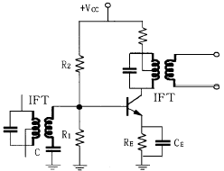
- 컬렉터의 바이어스 전압을 가능한 낮게 설정해야 출력포화로 인한 진폭 제한의 기능을 잘 수행한다.
- R1을 크게하면 우수한 진폭제한기의 기능을 수행한다.
- 콘덴서 C는 IF 이외의 높은 주파수의 잡음 신호를 제거하는 기능을 한다.
- RE 값을 적게하면 출력신호의 포화가 빨리 일어나 진폭제한기의 기능을 한다.
(정답률: 알수없음)
33. 동일한 단일 동조 증폭단을 n단 접속한 다단증폭기의 대역폭 Bn은 얼마인가? (단, 각 증폭단의 대역폭은B이다.)
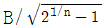
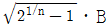
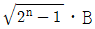
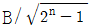
(정답률: 알수없음)
34. 수신 주파수와 국부발진 주파수를 동시에 변동시켜 일정한 중간주파수를 얻도록 조정하는 방식이 Tracking인데, 만일 Tracking이 정확하지 않으면 어떤 현상이 초래되는가?
- 이득 증가
- 충실도 저하
- 신호대 잡음비 개선
- 간섭과 방해 신호의 감소
(정답률: 알수없음)
35. PLL 주파수 합성기의 기본구성 요소와 거리가 먼것은?
- 전압제어발진기
- 주파수 변별기
- 저역통과 필터
- 위상검출기
(정답률: 알수없음)
36. 200[MHz] FM송신기의 5[MHz]발진기에서 4000[Hz]의 변조 신호로 200[Hz]의 주파수 편이를 걸때 송신기의 변조지수는 얼마인가?
- 2
- 4
- 8
- 0.⑤
(정답률: 알수없음)
37. 아래 그림은 CDMA 송신 시스템의 개략도이다. 빈칸에 들어갈 내용 중 적당한 것은?
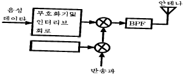
- 디지털 필터(Digital Filter)
- 주 발진기(Master OSC)
- 음성 부호화기(VOCODER)
- 의사잡음(PN) 부호 발생기
(정답률: 알수없음)
38. FM수신기의 특징과 관계 적은 것은?
- 수신 주파수대역이 넓다.
- 진폭제한회로가 필요하다.
- 주파수 변별회로가 있다.
- ANL회로를 사용한다.
(정답률: 알수없음)
39. 저잡음증폭기와 관계없는 것은?
- Magnetron 증폭기
- 파라메트릭 증폭기
- GaAs MESFET 증폭기
- 터널다이오드 증폭기
(정답률: 알수없음)
40. 샤논(C. E. Shannon)의 전송로 용량식은? (단, C 용량, W 대역폭, N 잡음전력, S 신호전력)
- C = W log2 (1 + S/N)
- C = W log10 (1 + S/N)
- C = 1.44 loge (1 + S/N)
- C = 1.44 S/N
(정답률: 알수없음)
3과목: 안테나 공학
41. 야기 안테나의 소자중 가장 긴 소자의 역활과 리액턴스 성분은 무엇인가?
- 도파기, 용량성
- 반사기, 유도성
- 지향기, 유도성
- 복사기, 용량성
(정답률: 알수없음)
42. 수직접지 안테나에 정관부하(top loading)를 설치할 경우 맞는 효과는 어느 것인가?
- 고유 주파수 증대
- 실효고의 감소
- 복사저항의 감소
- 고각도 방사의 감소
(정답률: 알수없음)
43. 쌍 loop 안테나에 대한 설명 중 틀린 것은?
- 2개의 원형구조의 1파장형 loop 안테나를 약
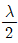
의 평형형 급전선으로 직렬 접속하고 그 중앙에서 여진한 안테나이다. - 장중파용으로 수직편파 지향성 안테나로 동작한다.
- loop 상하 부분으로 흐르는 전류는 동일한 방향이고, UHF대에서 사용된다.
- 무지향성을 얻기 위해 4각 철탑의 각 면에 안테나를 배치하여 사용한다.
(정답률: 알수없음)
44. 다음중 전자 혼(horn)의 특징과 다른 것은?
- 지향성이 예리하다.
- 개구면적이 클수록 이득이 커진다.
- 이득측정의 표준안테나로 사용할 수 있다.
- 이득은 파장에 비례한다.
(정답률: 알수없음)
45. 급전선을 통과하여 부하에 공급되는 전력은 파동 임피던스 Zo, 선로의 정재파비 S, 정재파의 루우프 (loop)점의 전류I를 사용하면 어떻게 표시할 수 있는가?
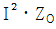
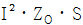
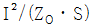
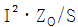
(정답률: 알수없음)
46. 초단파가 가시거리를 넘어서 이례적으로 멀리 전파하는 일이 있는데 그 원인이 아닌것은?
- 초굴절 또는 라디오 덕트에 의한 전파
- 대류권 산란에 의한 전파
- 산악회절파에 의한 전파
- F층의 반사에 의한 전파
(정답률: 알수없음)
47. 제 1 Fresnel Zone의 반경과 파장과의 관계는?
- 파장의 평방근에 반비례한다.
- 파장의 평방근에 비례한다.
- 파장의 자승에 반비례한다.
- 파장의 자승에 비례한다.
(정답률: 알수없음)
48. 안테나의 급전선(도파관)에 스터브(stub)를 다는 이유는?
- 복사전력을 증폭시키기 위하여
- 안테나의 지향성을 높이기 위하여
- 안테나의 리액턴스 성분을 제거하여 임피던스를 정합시키기 위하여
- 안테나의 서셉턴스 성분을 제거하여 대역폭을 증가시키기 위하여
(정답률: 알수없음)
49. 복사전력밀도가 최대복사 방향의 1/2로 감소되는 값을 갖는 각도로 지향특성의 첨예도를 표시하는 것은?
- 전후방비
- 주엽(main lobe)
- 부엽(side lobe)
- 빔폭
(정답률: 알수없음)
50. 주파수 100[MHz], 전계강도 40[dB]의 전파를 수신하였더니 수신 안테나에 유기된 전압이 300 [μV]이었다. 이 안테나의 실효길이는?
- 1[m]
- 3[m]
- 5[m]
- 7[m]
(정답률: 알수없음)
51. 비동조 급전선의 급전점에 정합회로를 설정하는 이유는?
- 급전선의 특성임피던스를 감소시키기 위해서
- 급전선의 특성임피던스를 일정하게 하기 위해서
- 안테나의 고유파장을 조절하기 위해서
- 급전선에 정재파를 실리지 않기 위해서
(정답률: 알수없음)
52. 복사저항이 100[Ω]이고, 손실저항이 25[Ω]이라고 할때 안테나의 복사효율은 몇[%]가 되는가?
- 60%
- 70%
- 80%
- 90%
(정답률: 알수없음)
53. 다음 중 전자파의 특성에 대한 설명으로 옳은 것은?
- 자유공간에서는 전계와 자계의 진동방향과 직각으로 진행한다.
- 주파수가 높을수록 직진성이 약하다.
- 균일한 매질 중을 진행하는 파는 굴절성이 강하다.
- 전자파는 종파이다.
(정답률: 알수없음)
54. 제펠린 안테나는 어떤 경우에 많이 사용하는가?
- 급전선의 영향을 적게할 때
- 임피던스 정합회로가 필요 할 때
- 전류급전을 할 때
- 공간적으로 반파장 더블렛을 설치하기 곤란할 때
(정답률: 알수없음)
55. 파라볼라 반사기의 역할로 맞는 것은?
- 전자 나팔에서 나온 구면파를 평면파로 변환한다.
- 카세그레인 안테나에서 부반사로 사용한다.
- 원편파만 사용할 수 있다.
- 광대역 특성을 갖도록 만들어 준다.
(정답률: 알수없음)
56. 송신 안테나의 높이가 30.25[m]이고,수신 안테나의 높이가 20.25[m]일때 초단파의 직접파 최대 가시거리는 얼마인가?
- 20.5[m]
- 32.2[m]
- 41.1[m]
- 53.4[m]
(정답률: 알수없음)
57. 어떤 시각에서 F1층의 임계주파수가 6.5[MHz]이고 송수신점간의 거리 500[km] 일 때 F1층의 반사를 이용하여 전파되는 MUF는? (단 F1층의 겉보기 높이는 100[km]이다.)
- 13.5 [MHz]
- 15.5 [MHz]
- 17.5 [MHz]
- 19.5 [MHz]
(정답률: 알수없음)
58. 다음 중 동축급전선의 특징으로 옳은 것은?
- 외부도체가 차폐역할을 하므로 복사손실은 없으나 외부전파의 영향은 막을 수 없다.
- 외부도체 내경과 내부도체 직경의 비를 2.6으로 하면 전송손실을 최소화할 수 있다.
- 극초단파 이하에서 주로 사용한다.
- 적어도 두 개의 도체로 구성되어 있으므로 TEM모드의 전송이 불가능하다.
(정답률: 알수없음)
59. 선박용 레이다 송신기에 가장 많이 사용되는 안테나에 해당되는 것은?
- 루프(loop) 안테나
- 애드콕(adcock) 안테나
- 헤리컬(helical) 안테나
- 슬롯 어레이(Slot array) 안테나
(정답률: 알수없음)
60. 전리층에서의 자이로 주파수 fG(Gyro - frequency)에 대한 설명중 옳은 것은? (단, 전자의 운동 평면과 자계 B는 수직이라하고 전자의 질량은 m이고, 전하량은 q로 주어진다고 가정한다.)
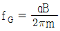
이며, 지역에 따라 다르다. 이며, 지역에 관계없이 일정하다.
이며, 지역에 관계없이 일정하다.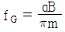
이며, 지역에 따라 다르다. 이며, 지역에 관계없이 일정하다.
이며, 지역에 관계없이 일정하다.
(정답률: 알수없음)
4과목: 무선통신 시스템
61. VHF대역의 전파가 가시거리 이외의 지역에서도 수신전계 강도가 크게 나타나는 이유로 적절한 것은?
- 다중경로에 의한 페이딩 현상
- 전파의 회절현상
- 전파의 장애물 투과현상
- 전파의 굴절현상
(정답률: 알수없음)
62. 위성 Digital 회선설비 특징이 아닌 것은?
- 고속 디지털 회선(데이터통신회선)을 구성할수 있다.
- 전국 대도시에 설치된 위성지국 구간에서 서비스를 제공한다.
- 위성 지국에서 이용자까지는 지상회선으로 연결한다.
- 점대점( point to point )의 단방향 서비스이다.
(정답률: 알수없음)
63. LNB(Low Noise Block-down convertor)의 구성 요소가 아닌 것은?
- LNA(Low Noise Amplifier)
- Mixer
- MODEM
- LO (Local OSC.)
(정답률: 알수없음)
64. 한 전송선로의 데이터 전송시간을 일정한 시간 구간으로 나누어 각부채널에 차례로 분배함으로써 몇 개의 저속부 채널이 한개의 고속 전송선을 나누어 이용하는 다중화방식은?
- TDM
- FDM
- PDM
- SDM
(정답률: 알수없음)
65. FM 통신방식이 AM 방식에 비해 S/N 비가 좋은 이유는?
- 깊은 변조를 할 수 있다.
- 점유주파수대 폭이 좁다.
- 클래리파이어(clarifier)를 사용한다.
- 수신측에 리미터(limiter)를 사용한다.
(정답률: 알수없음)
66. 현재 국내에서 상용화되어 사용되고 있는 디지털 이동통신 시스템에서는 CDMA 방식을 사용하고 있다. 여기에는 PN 코드를 사용하고 있는데 다음 설명 중 옳은 것은
- N을 쉬프트레지스터의 단수라할 때 주기는 2**N이다.
- PN코드는 상호상관특성이 우수하여 동기목적으로 사용하기에 적합하다.
- PN코드는 자기상관특성이 우수하여 동기목적으로 사용하기에 적합하다.
- maximum length sequence는 PN코드가 아니다.
(정답률: 알수없음)
67. ITU-R에서 권고하는 FDM 방식의 분류 단계가 아닌 것은?
- 60CH
- 300CH
- 1200CH
- 3600CH
(정답률: 알수없음)
68. 다음 중 정지위성통신의 장점이 아닌 것은?
- 장거리통신
- 안정한 대용량 통신
- 다원접속
- 0.6초 정도의 지연시간
(정답률: 알수없음)
69. 이동전화 가입자가 서비스 대상이외의 지역을 여행할 때 여행중인 해당지역 시스템을 이용하여 서비스를 받을 수 있도록 무선접속이 가능하게 하는 것은?
- 상호접속
- 로밍(Roaming)
- Hand - off
- 주파수 재사용
(정답률: 알수없음)
70. 위성통신의 장점이 아닌 것은?
- 많은 통신용량
- 향상된 error rate
- 통신의 비밀보장
- 통신비용의 감소
(정답률: 알수없음)
71. 무선통신 시스템 계획시 종합신뢰도의 설계에서 고려할 사항이 아닌 것은?
- MTBF(평균동작시간)
- MTTR(평균고장시간)
- TWTA(진행파증폭기)
- REDUNDANCY(병렬예비장치)
(정답률: 알수없음)
72. 첨두(peak)전력 350[kw], 평균전력 280[w]의 레이다에서 펄스 반복주파수가 1[kHz]일 때 펄스폭[㎲]은?
- 0.4[㎲]
- 0.5[㎲]
- 0.8[㎲]
- 1.0[㎲]
(정답률: 알수없음)
73. 종단 전력증폭기에서 자기발진을 할때 이것을 제거하기 위해서는 어떠한 조치가 필요한가?
- 변조입력을 적게 한다.
- 중화회로를 설치한다.
- 부하동조회로를 약간 이조시킨다.
- 증폭기의 바이어스 전압을 변경시킨다.
(정답률: 알수없음)
74. 통신위성의 종류로서 위성통신업무에 따른 구분이 아닌것은?
- 방송위성
- 기상위성
- 해사위성
- 위상위성
(정답률: 알수없음)
75. 정지위성은 적도상공의 궤도에 어떻게 쏘아올리면 양극 지방을 제외한 전세계를 커버하는 통신망이 가능한가?
- 2개의 위성을 180도 간격으로 쏘아올린다.
- 3개의 위성을 120도 간격으로 쏘아올린다.
- 4개의 위성을 90도 간격으로 쏘아올린다.
- 5개의 위성을 74도 간격으로 쏘아올린다.
(정답률: 알수없음)
76. 모든 통신에 있어서 구성되는 통신회선의 신뢰도는 통신망을 구성하는 가장 중요한 요소로서 특히 무선통신에서 발생하기 쉬운 페이딩(fading)현상은 신뢰도를 저하시키는 원인이 되는데 이러한 페이딩 대책기술이 아닌 것은?
- 공간 다이버시티
- 주파수 다이버시티
- 각도 다이버시티
- 송신 다이버시티
(정답률: 알수없음)
77. 위성회선의 다중접속방법이 아닌 것은?
- CSMA
- SDMA
- FDMA
- TDMA
(정답률: 알수없음)
78. 단측파대 통신방식의 이점으로 틀리는 것은?
- 점유 주파수대폭이 좁다.
- S/N비를 개선할 수 있다.
- 점유대역폭을 증가시킬 수 있다.
- 혼변조를 없앨 수 있다.
(정답률: 알수없음)
79. IMT-2000이 제공하게 되는 이동성이 아닌 것은?
- 단말기 이동성
- 개인 이동성
- 사용자 이동성
- 집단 이동성
(정답률: 알수없음)
80. 주파수가 4[GHz], 송수신 안테나의 이득이 각각 40[dB], 송수신점 사이의 거리가 48[Km], 수신기 출력이 10[mW] 일 때 송신기의 출력전력은 몇 [dBm]인가?
- 38.11
- 48.11
- 58.11
- 68.11
(정답률: 알수없음)
5과목: 전자계산기 일반 및 무선설비기준
81. 시스템 동작개시후 최초로 주기억장치에 프로그램을 load하는 것은?
- operating system
- bootstrap loader
- loader
- editor
(정답률: 알수없음)
82. 다음 중에서 코드의 역할이라고 할 수 없는 것은?
- 자료에 대한 분류, 조합
- 실행시간의 단축
- 개개의 데이터를 구분하기가 용이하다.
- 자료처리를 표준화, 단순화하는데 기여한다.
(정답률: 알수없음)
83. 운영체계의 처리방식중 온라인개념으로 데이터의 처리요구가 오면 즉시처리하는 방식은?
- Batch processing
- Time sharing
- spooling
- Real time processing
(정답률: 알수없음)
84. 수신설비의 충족조건과 관계 적은 것은?
- 명료도가 충분할 것
- 내부잡음이 적을 것
- 정합이 충분할 것
- 선택도가 클 것
(정답률: 알수없음)
85. 지정된 공중선 전력을 500W로 하고 허용편차를 상한 5%, 하한 10%라 할 때 공중선 전력의 허용 편차의 값은?
- 하한 450W에서 상한 525W 까지
- 하한 475W에서 상한 525W 까지
- 하한 475W에서 상한 550W 까지
- 하한 450W에서 상한 550W 까지
(정답률: 알수없음)
86. 전자파 적합등록 대상기기에서 제외될 수 있는 것은?
- 방송수신기기
- 조명기기
- 고전압설비
- 전시용 수입기기
(정답률: 알수없음)
87. 기억장치에 기억되어 있는 정보의 내용 또는 그의 일부에 의해서 기억되어 있는 위치에 접근하여 정보를 읽어내는 장치는?
- 연상기억장치(Associative Memory)
- 가상기억장치(Virtual Memory)
- 캐쉬 메모리(Cache Memory)
- 보조기억장치(Auxiliary Memory)
(정답률: 알수없음)
88. 전자계산기의 성능을 표시하는 단위는?
- BPS
- MIS
- MIPS
- TPS
(정답률: 알수없음)
89. 수치 자료 표현 방법에서 부동 소수점 표현(Floating point representation)을 가장 적절하게 설명한 것은?
- 부동 소수점 표현 방법에는 부호부, 가수부로 구분할 수 있다.
- 정밀도가 요구되는 과학 및 공학 또는 수학적인 응용에 주로 사용된다.
- 수를 표현하는 자리수는 고정 소수점에 비하여 적게 든다.
- 수 표현 방법이 고정 소수점에 비하여 간단하다.
(정답률: 알수없음)
90. 데이터의 표현단위를 비트 수의 크기의 순서로 나열한 것은?
- 비트-니블-바이트-워드-필드-레코드-파일
- 비트-니블-바이트-워드-레코드-필드-파일
- 비트-니블-바이트-워드-레코드-파일-필드
- 비트-니블-바이트-레코드-워드-필드-파일
(정답률: 알수없음)
91. 4096 × 8 비트의 ROM이 있을 때, 필요한 어드레스(address)핀은 몇 개가 필요한가?
- 10 개
- 11 개
- 12 개
- 13 개
(정답률: 알수없음)
92. 무선설비의 운용을 위한 전원은 전압변동율이 정격전압의 몇 % 이내로 유지할 수 있어야 하는가?
- ± 10
- ± 20
- ± 30
- ± 40
(정답률: 알수없음)
93. 다음 중에서 정보통신기기 인증신청서에 첨부하여야 할 서류가 아닌 것은?
- 기기의 개요, 사양, 구성, 조작방법 등이 포함된 설명서
- 기기의 제작공정
- 종합계통도
- 외관도 및 부품의 배치표시도
(정답률: 알수없음)
94. 전파형식 J3E의 공중선전력 표시방법으로 맞은 것은?
- 규격전력
- 첨두포락선전력
- 평균전력
- 반송파전력
(정답률: 알수없음)
95. 기억장치로부터 명령이나 데이터를 읽을 때 다음 중 제일 먼저 하는 일은?
- OPERAND 지정
- OPERAND 인출
- 어드레스 지정
- 어드레스 인출
(정답률: 알수없음)
96. 다음 중 주파수대, 무선국 종별, 허용편차의 관계가 서로 틀린 것은? (단, Hz이외는 백만분율임)
- 9kHz 초과 535kHz 이하, 무선측위국, 100
- 1606.5kHz 초과 4,000kHz 이하, 아마추어국, 500
- 4MHz 초과 29.7MHz 이하, 지구국, 50Hz
- 29.7MHz 초과 100MHz 이하, 육상국, 20
(정답률: 알수없음)
97. 형식검정을 받고자 하는 기기가 합격기준에 적합하다고 인정하는 때는 "인증서"를 신청인에게 교부하고 관보에 고시하여야 한다. 고시내용이 아닌 것은?
- 형식기호
- 기기의 명칭,모델명
- 인증연월일
- 형식검정 확인자 성명
(정답률: 알수없음)
98. 다음 중 MPU (마이크로 프로세서)에서 명령(instruction) 해독을 수행하는 것은?
- 프로그램 카운터(PC)
- 디코더(decoder)
- 엔코더(encoder)
- 명령 레지스터(instruction register)
(정답률: 알수없음)
99. 160KG3EJN의 전파형식 표시중에 주반송파의 변조형식을 표시하는 문자는?
- K
- G
- E
- J
(정답률: 알수없음)
100. 전파자원의 공평하고 효율적인 이용을 촉진하기 위한 필요한 조치사항이 아닌 것은?
- 주파수 분배의 변경
- 새로운 기술방식으로의 전환
- 주파수의 사용억제
- 이용 실적이 저조한 주파수의 회수 또는 재 배치
(정답률: 알수없음)